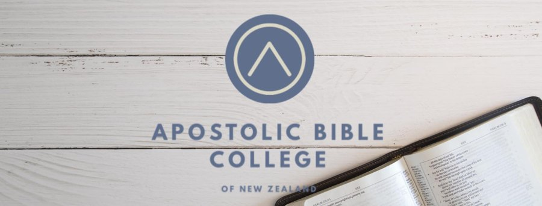
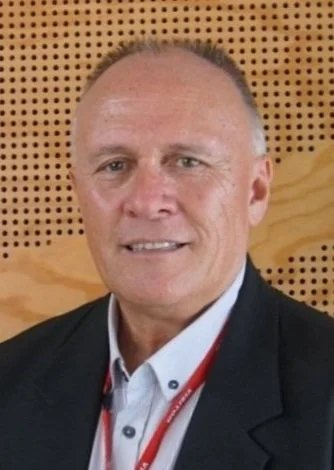

United Pentecostal Church International — New Zealand
One national body.
Many local places to belong.
UPCI New Zealand is the national body connecting churches across three regions of the country. Wherever you are, there is a local congregation and a leadership structure standing behind it.
About the UPCI NZ
An established denomination, organised around real, local churches.
United Pentecostal Church International New Zealand is the national body for UPCI congregations across the country. It exists to hold three regions, ten local churches, six national departments and a Bible college together as one connected family — while keeping every congregation local, pastored, and reachable.
The structure is simple by design: one national leadership, three regional presbyters, and departments that serve every church equally, regardless of size or location.
Find a Church
Ten churches, organised into three regions.
Every church below is a full member congregation of UPCI New Zealand.
Northern Region
Central Region
Southern Region
All 10 UPCI New Zealand churches, in directory order. Select a church to view its service details and location.
Departments
Six national departments, one family.
Each department serves every region and every church equally.
National Men's Department
Ladies Ministries
Home Missions Department
Youth Ministry
Children's Ministry
Prayer Ministry
Calendar of Events
Key national dates for 2026.
Scroll to see every headline date this year.
General Conference
National 7 Day Prayer & Fasting
ABC Teachers Training Seminar
Annual Ministers Meeting
Apostolic Men's Conference
JBQ Mini-tourney
Apostolic Bible College
Training leaders for the local church.
The Apostolic Bible College equips ministers and lay leaders for service across UPCI New Zealand's churches and departments.
Its training is part of how the national body invests directly back into local congregations.
Learn about ABC
Who Leads Us
National executive & regional presbyters.
Rev. Troy Wickette
General Superintendent
Rev. Wayne Goodare
Assistant General Superintendent
Rev. Andrew Kintanar
General Secretary & Treasurer

Rev. Brian Aubrey
Northern Region Presbyter
Rev. Jules Matika
Central Region Presbyter
Rev. Peter Lloyd
Southern Region Presbyter